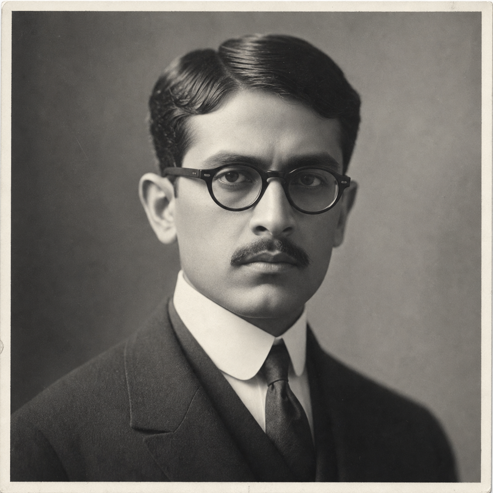

Arindam Chatterjee
(370 Points)
Male; Age 38; 5'3", 154 lbs; A slim Bengali man in his late thirties, impeccably dressed and almost surgically composed. His manners are so controlled they read as cold until one notices how carefully he attends to clerks, porters, and stenographers, and how little escapes him in a crowded room.
| ST: 10/11 [0] | IQ: 18 [125] | Speed: 5.50 |
| DX: 11 [10] | HT: 11 [10] | Move: 5 |
| Dodge: 5 |
Advantages
Alertness +3 [15]; Contacts (Banking House Clerk) (Skill 12, 9 or less, Somewhat Reliable) [1]; Contacts (Consular Secretary) (Skill 15, 9 or less, Somewhat Reliable) [2]; Contacts (Courthouse Clerk) (Skill 15, 9 or less, Somewhat Reliable) [2]; Contacts (Customs House Broker's Clerk) (Skill 15, 9 or less, Somewhat Reliable) [2]; Contacts (Harbor Commission Clerk) (Skill 15, 9 or less, Somewhat Reliable) [2]; Contacts (Maritime Insurance Adjuster's Clerk) (Skill 15, 12 or less, Somewhat Reliable) [4]; Contacts (Probate Registrar's Clerk) (Skill 15, 9 or less, Somewhat Reliable) [2]; Contacts (Shipping Gazette Reporter) (Skill 15, 12 or less, Somewhat Reliable) [4]; Eidetic Memory 1 [30]; Lang: Bengali (Native) [0]; Lang: English (Native) [0]; Lang: French (Accented Spoken/Accented Written) [4]; Lang: Hindustani (Accented Spoken/Accented Written) [4]; Lang: Sanskrit (Broken Spoken/Accented Written) [4]; Lang: Spanish (Accented Spoken/Accented Written) [4]; Patron (The Quiet Ledger Circle) (9 or less) [10] (Secret: -5); Patron (Followers of the Right Hand) (15 or less) [20] (Equipment: Standard, +5; Special Qualities (Access to Magic in Non-magical World): Very Unusual, +10; Secret: -5; Subtraction (Minimal Intervention): -5); Reputation +4 (Formidable barrister among clerks, shippers, consuls, and cautious investors) [20] (Reaction: +4); Status 4 [20]; Strong Will +6 [24] (Will: 24); Unusual Background (Natural Learner) [5]; Voice [10] (Reaction: +2); Wealthy [20] (Starting Wealth: $3,750).
Disadvantages
Duty (15 or less) [-25] (Involuntary: -5; Subtraction (Extremely Hazardous): -5); Enemy (Unknown Enemies of FRH) [-60] (Unknown: -5; Subtraction (Access to Magic in Non-magical World): -15); Nightmares [-5]; Secret (Private caste recoil he is ashamed to admit even to himself) [-5]; Secret (Psionic powers) [-30].
Quirks
Avoids crowded markets unless duty leaves him no alternative.; Never signs a paper until he has reread the names aloud.; Still notices his own visceral recoil before his conscience catches up.; Straightens his cuffs before delivering a damaging question.; Treats clerks and stenographers with formal respect that startles their employers.. [-5]Powers
Telepathy 10 [50].
Skills
Accounting-20 [4]; Acting-17 [½]; Administration-21 [4]; Area Knowledge (Los Angeles)-22 [4]; Area Knowledge (Mexican Pacific Commercial Circuits)-20 [2]; Detect Lies-20* [½]; Diplomacy-28* [10]; Emotion Sense-22 [12] (Fatigue: 0, Range: 100 yd, Area: subject, Maintain: infinite, Resist: MS, Page: P20); Fast-Talk-18 [1]; History (British Empire)-18 [2]; History (India)-18 [2]; Interrogation-19 [2]; Law-22 [6]; Law (Contract)-22 [6]; Law (Probate)-20 [4]; Merchant-21 [4]; Mind Shield-20 [8]; Philosophy-16 [½]; Politics-25* [6]; Psychology-20* [1]; Research-21 [4]; Savoir-Faire-22* [3½]; Streetwise-19 [2]; Theology-17 [1]; Writing-20 [3].
*Cost modifiers: Telepathy, Voice.
Description
Arindam Chatterjee was born into a high-caste Bengali household that prized education, discipline, and public dignity, and he mastered all three early. What nobody around him fully understood was that he was too sensitive for the world he had inherited. As a boy he learned, all at once and far too young, that a crowded market could feel like a storm of disgust, pity, rage, humiliation, cruelty, fear, and performative piety crashing through his own mind. He never forgot it. From that point on, reason became sacred to him, composure became necessary, and the orderly architecture of law became more than a profession. It became a fortress.British-trained and exacting, Arindam built himself into the kind of barrister respectable people seek when money, inheritance, shipping, consular trouble, or quiet scandal threaten to become public ruin. He is devastatingly polite, dryly funny, and almost never raises his voice. He is courteous to clerks, servants, porters, stenographers, and junior functionaries because he knows institutions truly run through them. When he is angry, it does not become louder. It becomes more precise. In America he made himself valuable enough to become a senior partner with real wealth, not merely a good income, and his practice stretches through shipping, probate, trusts, and discreet international matters up and down the Pacific world, including regular business tied to Mexican port cities. He understands better than most that for a non-White man in elite legal circles, durable wealth, control, and professional insulation are not luxuries. They are survival.
His gift is not the flashy sort of telepathy that makes a room gasp. Arindam reads strain, panic, contempt, concealed aggression, and shame before he can quite explain how he knows. He is unusually difficult to charm, possess, deceive, or mentally penetrate, and he distrusts glamour, frenzy, and loose emotion in himself as much as in anyone else. He believes hierarchy is morally indefensible, yet still catches himself reacting before principle arrives, and he hates that reflex enough to keep disciplining it year after year. In play, he is the man who turns procedure into x-ray vision: the one who notices the forged signature, the impossible will, the spiritually wrong paperwork, or the clause designed to hide metaphysical trespass under the appearance of law. He is morally serious without being saintly, sensitive without being soft, and most at home where paperwork, dignity, and the occult have all become impossible to separate.